Silent Hill 1
El juego sigue a Harry Mason, un hombre que viaja con su hija adoptiva, Cheryl, a la pequeña ciudad de Silent Hill para pasar unas vacaciones. Durante el viaje, Harry se desvía del camino y sufre un accidente; al despertar, descubre que Cheryl ha desaparecido misteriosamente. Desesperado, comienza a explorar la ciudad en busca de su hija.
A medida que Harry avanza, se encuentra con un pueblo sumido en una niebla espesa y habitado por criaturas grotescas. También conoce a varios personajes ambiguos, como Cybil Bennett, una oficial de policía, y Dahlia Gillespie, una mujer vinculada a los extraños sucesos del lugar. Harry descubre que Cheryl es parte de un ritual de culto realizado por la secta de Silent Hill, quienes buscan invocar a un ser demoníaco llamado Samael a través de su sangre.
La ciudad parece reflejar los miedos y traumas internos de sus habitantes, alternando entre el mundo “real” y un mundo alternativo oscuro y distorsionado, donde la violencia y el terror son más intensos. Al final, según las decisiones del jugador, Harry puede rescatar a Cheryl y escapar de la ciudad, o fracasar, enfrentándose a diferentes finales que revelan la verdadera naturaleza de Silent Hill y el destino de los personajes.


 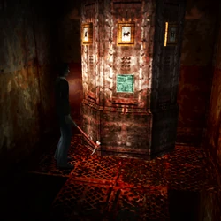
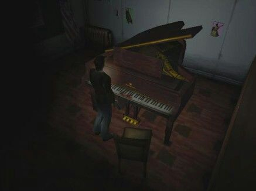
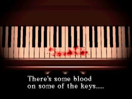
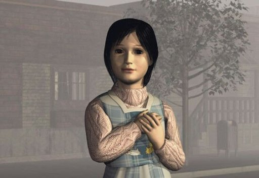
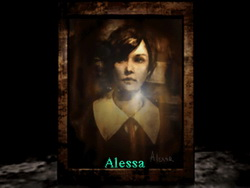
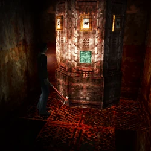
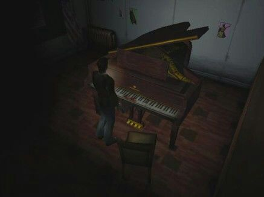
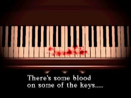
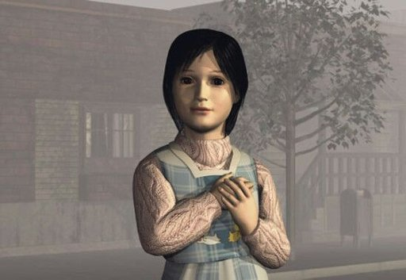
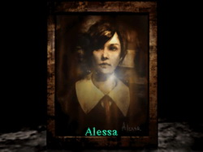
Monstruos de Silent Hill 1
| Imagen | Monstruo | Descripción breve |
|---|---|---|
| 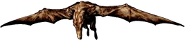 | Air Screamer | Criatura voladora similar a un pterodáctilo que ataca en picada. |
| 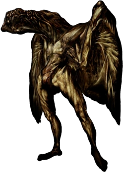 | Night Flutter | Variante más fuerte del Air Screamer en el Otro Mundo. |
| 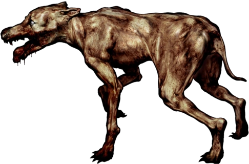 | Groaner | Perros desollados que patrullan las calles de Silent Hill. |
| 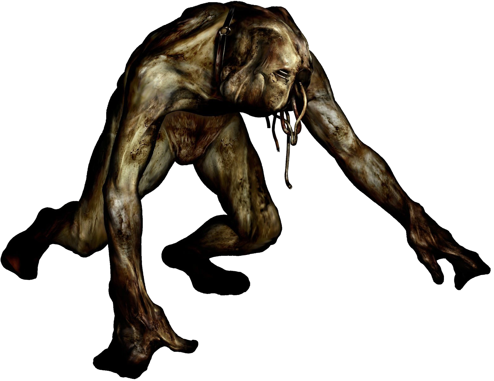 | Romper | Versión más rápida y agresiva del perro Groaner. |
 | Grey Child | Criaturas infantiles deformadas del colegio. |
| 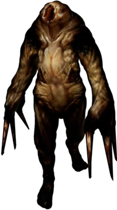 | Mumbler | Seres pequeños y peligrosos que atacan en grupo. |
 | Stalker | Pequeñas sombras que representan niños fantasma. |
 | Larval Stalker | Versión más débil y temblorosa del Stalker. |
| 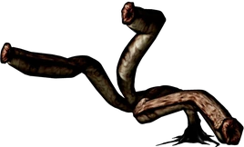 | Bloodsucker | Trampas invisibles de tentáculos que dañan al jugador. |
| 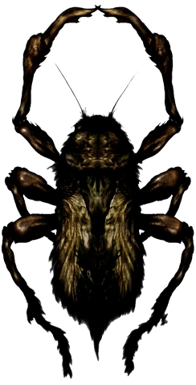 | Creeper | Bichos tipo cucaracha gigantes que atacan en enjambres. |
| 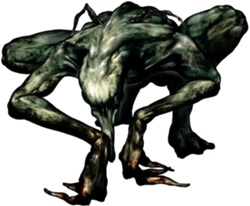 | Hanged Scratcher | Cucarachas más grandes y fuertes del Otro Mundo. |
| 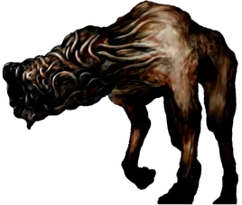 | Wormhead | Larva gigante que aparece como enemigo subterráneo. |
 | Puppet Nurse | Enfermeras controladas por el parásito Incubus. |
| 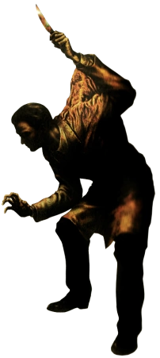 | Puppet Doctor | Doctores manipulados por el parásito demoníaco. |
| 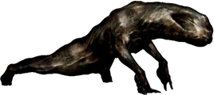 | Split Head | Lagarto gigante del colegio. |
| 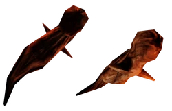 | Parasite | Parásito que controla enemigos humanos. |
| 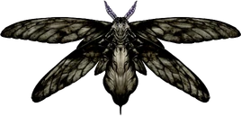 | Floatstinger | Polilla enorme que ataca en el Otro Mundo. |
| 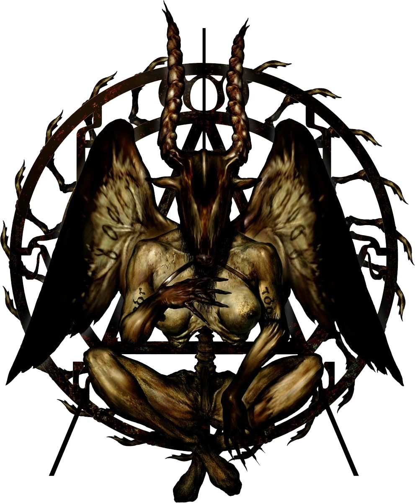 | God (Incubus) | Forma demoníaca final nacida del sufrimiento de Alessa. |
Inventario completo
Listado completo de armas, objetos curativos y objetos clave de Silent Hill 1, 2 y 3.
Inventario
Armas
| Arma | Descripción |
|---|---|
| Pistola | Arma básica y equilibrada. |
| Escopeta | Corta distancias, daño alto. |
| Rifle de caza | Muy potente, poca munición. |
| Martillo | Gran daño cuerpo a cuerpo. |
| Cuchillo | Débil pero rápido. |
Objetos curativos
| Objeto | Descripción |
|---|---|
| Bebida energética | Recupera poca vida. |
| Botiquín | Curación fuerte. |
| Ampolla | Curación total. |
Objetos clave
| Objeto | Uso |
|---|---|
| Llave de la escuela | Abre las puertas del colegio. |
| Medallón del tiempo | Puzzle en el patio del colegio. |